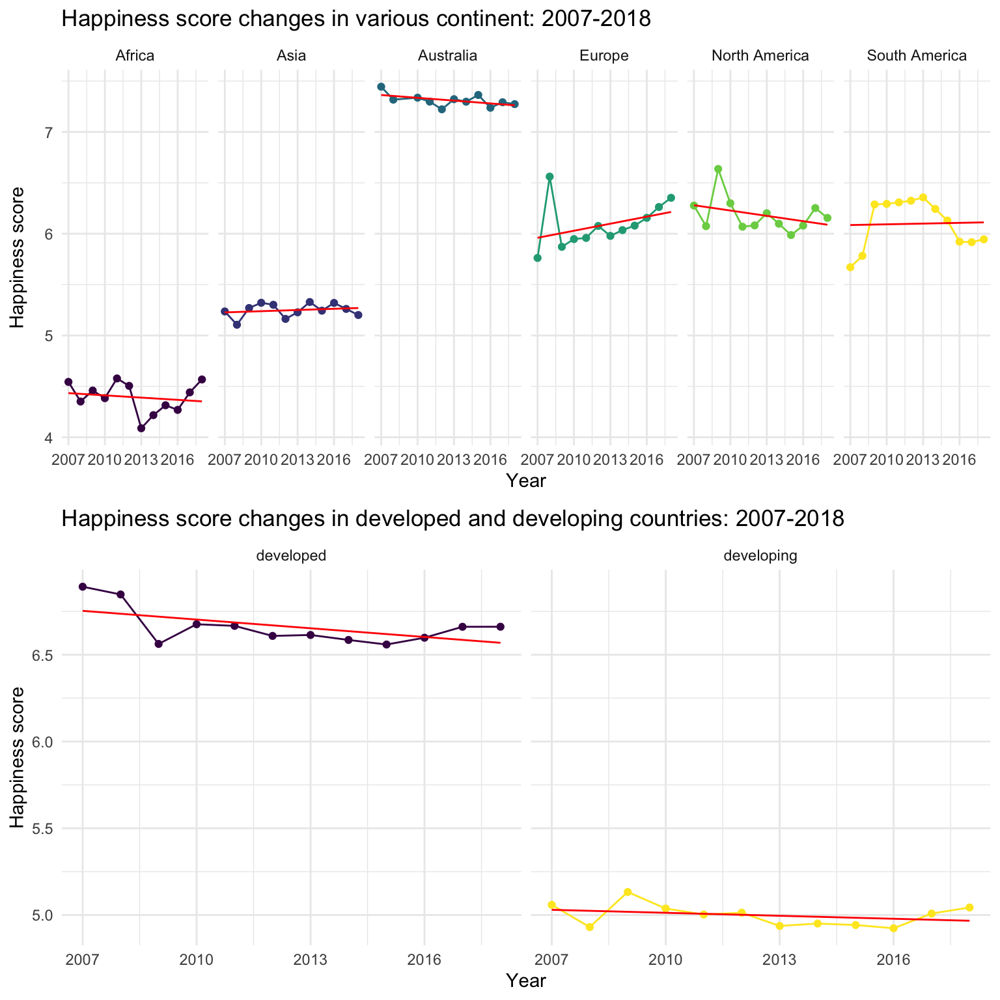
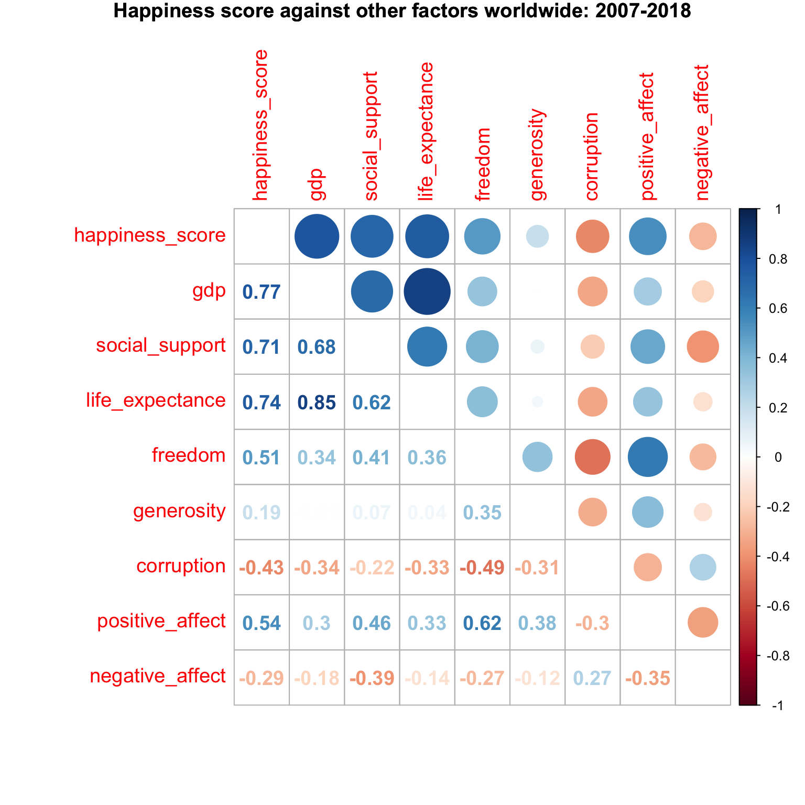
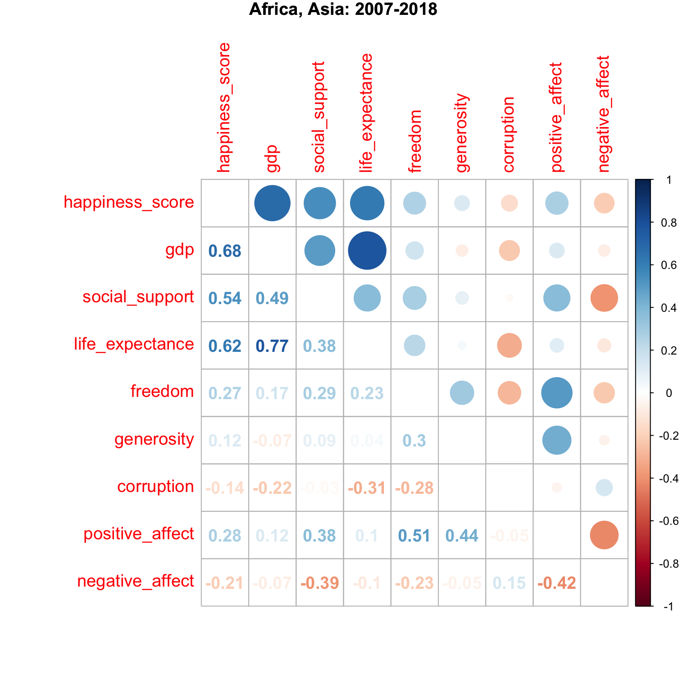
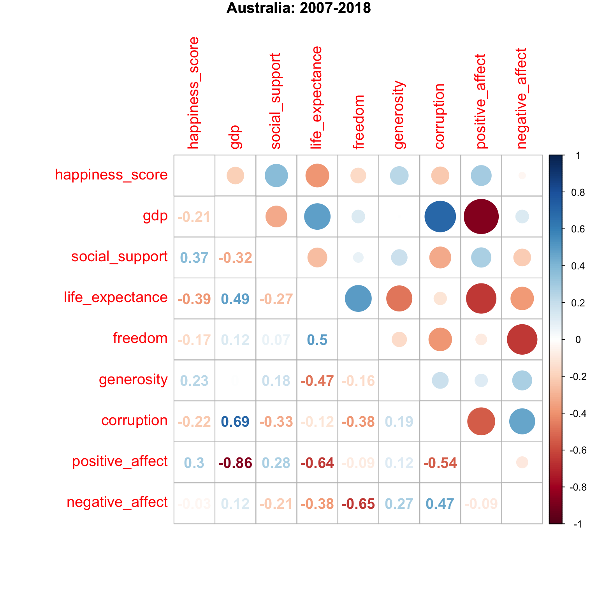

Final report
Motivation
Aristotle once said, “Happiness is the meaning and purpose of life.” However, as civilizations are developing, the happiness of human being becomes an ambiguous topic. Simple material enjoyment is no longer the only determinant of mental pleasure. Therefore, we wonder how the state of happiness in the world change overtime and what makes the world happy? For this purpose, 165 countries, 12 years from 2008 to 2018 and 8 factors about happiness are included in our analysis.
Initial questions
We sought to see the general trend of happiness, indicating by life ladder, over recent years of each country around the world. We were also interested in examining influential factors on happiness and the strength of their association. In addition, during the process of analysis, we found stratification might help the analysis and therefore, countries were divided into the developing and developed in the first model, into different regions in the second model. As such, our questions were as follows:
- What are the influential factors on happiness? How can we visualize these correlations?
- How does happiness change in each country over recent years?
- If the association differs in different regions?
- If the association differs among developing and developed countries?
Data
The information was gathered primarily from The World Happiness Report created by the United Nations Sustainable Development Solutions Network (UNSDSN). Data was collected by asking respondents to value their lives today on a 0 to 10 scale, with the worst possible life as a 0 and the best possible life as a 10. This gave us a chance to compare happiness levels and inequality in different parts of the world.
Furthermore, we find capital longitude and latitude from kaggle to locate a country when drawing association map.
Variable definition
Outcome and factors that we’re interested in：
Life Ladder: Happiness score or subjective well-being, with steps numbered from 0 at the bottom to 10 at the top.(we renamed it as happiness_score in dataset)LOG GDP per capita: the log value of GDP per capita (variable name gdp) in purchasing power parity (PPP).(we renamed it as gdp in dataset)Social support: the national average of the binary responses (either 0 or 1) to the GWP(Gallup World Poll) question “If you were in trouble, do you have relatives or friends you can count on to help you whenever you need them, or not?”(we renamed it as gdp in dataset)Healthy life expectancy at birth: Healthy life expectancies at birth are based on the data extracted from the World Health Organization’s (WHO) Global Health Observatory data repository.(we renamed it as life_expectance in dataset)Freedom to make life choices: the national average of responses (either 0 or 1) to the GWP question “Are you satisfied or dissatisfied with your freedom to choose what you do with your life?” (we renamed it as freedom" in dataset)Generosity: the residual of regressing national average of response to the GWP question “Have you donated money to a charity in the past month?” on GDP per capita.Perceptions of corruption: the national average of the survey responses to two questions in the GWP: “Is corruption widespread throughout the government or not” and “Is corruption widespread within businesses or not?” The overall perception is just the average of the two 0-or-1 responses.(we renamed it as corruption in dataset)Positive affect: the average of three positive affect measures in GWP: happiness, laugh and enjoyment in the GWP, respectively the responses to “Did you experience the following feelings during A LOT OF THE DAY yesterday? How about Happiness?”, “Did you smile or laugh a lot yesterday?”, and “Did you experience the following feelings during A LOT OF THE DAY yesterday? How about Enjoyment?”.Negative affect: the average of three negative affect measures like worry, sadness and anger in GWP, respectively the responses to “Did you experience the following feelings during A LOT OF THE DAY yesterday? How about Worry?”, “Did you experience the following feelings during A LOT OF THE DAY yesterday? How about Sadness?”, and “Did you experience the following feelings during A LOT OF THE DAY yesterday? How about Anger?”
Loading and tidying data
We first save the crude dataset as “.xls” format from the website and read it into R and call it data_all. The crude data includes 1704 observations and 26 variables from 2005-2018 years, 165 countries.
data_all = read_excel("./data/WHR.xls")%>%
janitor::clean_names() After reviewing the whole dataset through checking the missing values in each variable and in each year, we decide to keep variables with the number of missing values less than 100 and observations from 2007-2018.
Finally we obtain 11 variables with 1588 observations from 164 countries without deleting any misssing values. Then we write the new tidyed data as final_data_all_country.csv, which is implemented for all the following works.
sum_na = function(x){
sum = sum(is.na(x))
sum}
missing_number = map(data_all,sum_na) %>%
as.data.frame()
final_data =
data_all %>%
filter(year %in% c(2007:2018)) %>%
select(country_name:negative_affect)
write.csv(final_data,file="data/final_data_all_country.csv",quote=F,row.names = F)For exploratory analysis
In the original data, they use log to get the result of GDP, we try to transfer it back to the real scale. We divide these countries into developing and developed country by the criteria that some economists prefer to see a country with per capita GDP of at least $25,000 to be declared as developed.
happy =
read_csv("data/final_data_all_country.csv") %>%
rename("country" = country_name,
"happiness_score" = life_ladder,
"gdp" = log_gdp_per_capita,
"life_expectance" = healthy_life_expectancy_at_birth,
"freedom" = freedom_to_make_life_choices,
"corruption" = perceptions_of_corruption) %>%
unique() %>%
mutate(o_gdp = exp(gdp)) %>%# in the original data, they use log get the result, i try to transfer in the real way
mutate(develop = ifelse(o_gdp > 25000, "developed", "developing")) # actually there is no speicific cretiria to distinguish the developed and developing country.We add a new variable to distinguish the continent, because we want to see whether the association of happiness scores and other factors will change dependes on variaous continents.
Asia =
c("Israel", "United Arab Emirates", "Singapore", "Thailand", "Taiwan Province of China",
"Qatar", "Saudi Arabia", "Kuwait", "Bahrain", "Malaysia", "Uzbekistan", "Japan",
"South Korea", "Turkmenistan", "Kazakhstan", "Turkey", "Hong Kong S.A.R., China", "Philippines",
"Jordan", "China", "Pakistan", "Indonesia", "Azerbaijan", "Lebanon", "Vietnam",
"Tajikistan", "Bhutan", "Kyrgyzstan", "Nepal", "Mongolia", "Palestinian Territories",
"Iran", "Bangladesh", "Myanmar", "Iraq", "Sri Lanka", "Armenia", "India", "Georgia",
"Cambodia", "Afghanistan", "Yemen", "Syria")
Europe =
c("Norway", "Denmark", "Iceland", "Switzerland", "Finland",
"Netherlands", "Sweden", "Austria", "Ireland", "Germany",
"Belgium", "Luxembourg", "United Kingdom", "Czech Republic",
"Malta", "France", "Spain", "Slovakia", "Poland", "Italy",
"Russia", "Lithuania", "Latvia", "Moldova", "Romania",
"Slovenia", "North Cyprus", "Cyprus", "Estonia", "Belarus",
"Serbia", "Hungary", "Croatia", "Kosovo", "Montenegro",
"Greece", "Portugal", "Bosnia and Herzegovina", "Macedonia",
"Bulgaria", "Albania", "Ukraine")
North_America =
c("Canada", "Costa Rica", "United States", "Mexico",
"Panama","Trinidad and Tobago", "El Salvador", "Belize", "Guatemala",
"Jamaica", "Nicaragua", "Dominican Republic", "Honduras",
"Haiti")
Sorth_America =
c("Chile", "Brazil", "Argentina", "Uruguay",
"Colombia", "Ecuador", "Bolivia", "Peru",
"Paraguay", "Venezuela")
Australia =
c("New Zealand", "Australia")
happy = happy %>%
mutate(continent = case_when(
country %in% Asia ~ "Asia",
country %in% Europe ~ "Europe",
country %in% North_America ~ "North America",
country %in% Sorth_America ~ "South America",
country %in% Australia ~ "Australia",
TRUE ~ as.character("Africa")
))To better show the association of other factors and happiness score, we standardaize the value of other factors by substracting mean and devideing standard error. This is becasue the scale of gdp and life_expectancy are dramatically different from other factors.
happy_standard = happy %>%
mutate(s_gdp = scale(gdp),
s_social_support = scale(social_support),
s_life_expectance = scale(life_expectance),
s_freedom = scale(freedom),
s_positive_affect = scale(positive_affect),
s_negative_affect = scale(negative_affect),
s_generosity = scale(generosity),
s_corruption = scale(corruption)) %>%
select(-c(gdp:corruption), -o_gdp)For drawing maps
Like data tidying for data exploratory analysis, we first read final_data_all_country.csv as happy1 and rename some variables in a clearer way and add new variables for drawing world map. Furthermore, we add the locations of capitals for each country by combining concap.csv into happy1. For some unmatched countries, we find their locations of capitals in Wikipedia. Finally, a new dataset is created for all changes stating above.
happy1 = read_csv("data/final_data_all_country.csv") %>%
janitor::clean_names() %>%
unique %>%
mutate(label = str_c("<b>Happiness: ", round(life_ladder,2),
"</b><br>Country : ", country_name,
sep = ""),
code = countrycode(country_name, 'country.name', 'iso3c'),## match code
code = replace_na(code,"XKX")) %>%
rename("country" = country_name,
"happiness_score" = life_ladder,
"gdp" = log_gdp_per_capita,
"life_expectance" = healthy_life_expectancy_at_birth,
"freedom" = freedom_to_make_life_choices,
"corruption" = perceptions_of_corruption)
location = read_csv("data/concap.csv") %>%
janitor::clean_names() %>%
select(country_name,capital_latitude,capital_longitude) %>%
rename("country" = country_name)
happy_location_raw = left_join(happy1, location, by = "country")
# Find countries whose locations of capitals could not match
list <-which(rowSums(is.na(happy_location_raw %>%
select(capital_latitude))) > 0)
data_all_na <- happy_location_raw[list,]
happy_location_lost =
happy_location_raw[list,] %>%
mutate(capital_latitude = case_when(
country == "Congo (Brazzaville)" ~ -4.267778,
country == "Ivory Coast" ~ 6.85,
country == "Gambia" ~ 13.466667,
country == "North Cyprus" ~ 35.183333,
country == "Palestinian Territories" ~ 31.516667,
country == "Taiwan Province of China"~ 25.066667,
country == "Somaliland region"~ 9.55,
country == "Congo (Kinshasa)"~ -4.316667,
country == "Hong Kong S.A.R. of China"~ 114.10000
),
capital_longitude = case_when(
country == "Congo (Brazzaville)" ~ 15.291944,
country == "Ivory Coast" ~ 5.3,
country == "Gambia" ~ -16.6,
country == "North Cyprus" ~ 33.366667,
country == "Palestinian Territories" ~ 34.45,
country == "Taiwan Province of China"~ 121.516667,
country == "Somaliland region"~ 44.05,
country == "Congo (Kinshasa)"~ 15.316667,
country == "Hong Kong S.A.R. of China"~ 22.20000)
)
happy_location =
bind_rows(happy_location_raw,happy_location_lost) %>%
drop_na(capital_latitude,capital_longitude)Exploratory analysis
Happiness score of all countries changes over time
We firstly explore the changes of happiness score over time worldwide, by continents and by developing levels.
From the first plot, we can easily find that the mean happiness score increases from 2007 to 2010, and gradually decreases to the lowest point in 2014. Finally, it increases in the recent years. 2014, 2018
From the second plot, we divide these countries into different regions by the geographic continent. Australia has the overall highest and Africa has the overall lowest happiness score. Only Europe and Asia show the general increasing trend of happiness score over time.
We can roughly further divide these continents into three groups base on the happiness scores. The high happiness score group contains Australis, the medium happiness score group contains Europe, North America and South America, and the low happiness score group contains Africa and Asia.
From the third plot, the mean happiness score is obviously higher in developed countries than it in developing countries.
plot1 = happy %>%
group_by(year) %>%
summarise(year_mean_score = mean(happiness_score)) %>%
ggplot(aes(x = year, y = year_mean_score)) +
geom_path() +
labs(title = "Happiness score changes worldwide: 2007-2018",
x = "Year",
y = "Happiness score") +
scale_x_continuous(
breaks = c(2007,2008,2009,2010,2011, 2012, 2013,2014,2015,2016,2017,2018))
plot2 = happy %>%
group_by(year, continent) %>%
summarise(year_mean_score = mean(happiness_score)) %>%
ggplot(aes(x = year, y = year_mean_score, color = continent)) +
geom_point() +
geom_line() +
geom_smooth(method = lm, size = 0.5,
se = FALSE, color = "red") +
facet_grid(. ~ continent) +
labs(title = "Happiness score changes in various continent: 2007-2018",
x = "Year",
y = "Happiness score") +
theme(legend.position = "none")
plot3 = happy %>%
drop_na(develop) %>%
group_by(year, develop) %>%
summarise(year_mean_score = mean(happiness_score)) %>%
ggplot(aes(x = year, y = year_mean_score, color = develop)) +
geom_point() +
geom_line() +
geom_smooth(method = lm, size = 0.5,
se = FALSE, color = "red") +
facet_grid(. ~ develop) +
labs(title = "Happiness score changes in developed and developing countries: 2007-2018",
x = "Year",
y = "Happiness score")+
theme(legend.position = "none")
plot1/plot2/plot3The correlation plot for happiness score and other factors: worldwide
From the scatterplot, the factors
negative_affectandcorruptionhave the negative association with happiness score, butgdp,social support,life_expectancy,freedom,positive_affectandgenerosityhave the positive association.From the correlation matrix plot, the happiness score is highly associated with
gdp,social supportandlife_expectancy(> 0.7). In addition,gdpandlife_expctancyare highly correlated with each other(> 0.7).
happy_standard %>%
pivot_longer(s_gdp:s_corruption,
names_to = "standard_factors",
values_to = "standard_value") %>%
ggplot(aes(x = happiness_score, y = standard_value,
color = standard_factors)) +
geom_point() +
geom_boxplot(alpha = .8) +
geom_smooth(method = lm, color = "red") +
facet_grid(. ~ standard_factors) +
labs(x = "Happiness score",
y = "Standard score of other factors",
title = "Happiness score against other factors worldwide: 2007-2018") +
theme(legend.position = "none")
happy_standard %>%
drop_na() %>%
select(-c(country, year, continent, develop)) %>%
cor() %>%
corrplot.mixed(title = "Happiness score against other factors worldwide: 2007-2018",
tl.cex = 1.2, tl.pos = "lt", number.cex = 1.2,
mar = c(0,0,1,0))
The correlation plot for happiness score and other factors : continent
Australia has the highest happiness score, and the score does not have high correlation with other factors(not greater than 0.4).
gdpis strongly positively associated withcorruption(0.69) and negatively assoicated withpositive_affe t(-0.86)Europe, North America, South America have the medium happiness score, and the score has moderate correlation with
gdp,social support,life_expectancy,freedom,positive_affectandcorruption(0.6 - 0.7)Africa and Asia have the lowest happiness score, and the score has moderate correlation with
gdp,social supportandlife_expectancy(0.6 - 0.7).
happy_standard %>%
drop_na() %>%
filter(continent == "Australia") %>%
select(-c(country, year, continent, develop)) %>%
cor() %>%
corrplot.mixed(title = "Australia: 2007-2018",
tl.cex = 1.2, tl.pos = "lt", number.cex = 1.2,
mar=c(0,0,1,0))happy_standard %>%
drop_na() %>%
filter(continent %in% c("Europe", "North America", "South America")) %>%
select(-c(country, year, continent, develop)) %>%
cor() %>%
corrplot.mixed(title = "Europe, North America, South America: 2007-2018",
tl.cex = 1.2, tl.pos = "lt", number.cex = 1.2,
mar = c(0,0,1,0))
happy_standard %>%
drop_na() %>%
filter(continent %in% c("Africa", "Asia")) %>%
select(-c(country, year, continent, develop)) %>%
cor() %>%
corrplot.mixed(title = "Africa, Asia: 2007-2018 ",
tl.cex = 1.2, tl.pos = "lt", number.cex = 1.2,
mar=c(0,0,1,0))
The correlation plot for happiness score and othe factors : developing level
Developing coountries have lower happiness score , and the score has moderate correlation with
gdp,social supportandlife_expectancy(around 0.6).Developed coountries have higher happiness score , and the score has moderate correlation with
social support,freedom,positive_affect,negative_affect,generosityandcorruption(around 0.6)
happy_standard %>%
drop_na() %>%
filter(develop == "developing") %>%
select(-c( country, year, continent, develop)) %>%
cor() %>%
corrplot.mixed(title = "Developing: 2007-2018",
tl.cex = 1.2, tl.pos = "lt", number.cex = 1.2,
mar=c(0,0,1,0))
happy_standard %>%
drop_na() %>%
filter(develop == "developed") %>%
select(-c(country, year, continent, develop)) %>%
cor() %>%
corrplot.mixed(title = "Developed: 2007-2018",
tl.cex = 1.2, tl.pos = "lt", number.cex = 1.2,
mar=c(0,0,1,0))
Statistical Analysis(MLR)
After visualization the correlation of happiness score and other factors in different levels, we decide to formally test the main effect of gdp, social support, life_expectancy, freedom, positive_affect, negative_affect , generosity and corruption on the happiness score and the interaction effect between several covariates.
By the inspiration of exploratory correlation plots, the developing levels and continent may also influence the estimates in the regression model. However, we think that the difference of correlation coefficient between continent mainly due to the developing level. Besides, we define the developing level based on the gdp, so we exclude gdp and only include the developing level as categorical variable in the final analysis.
- After fitting with total 8 main effects, only five of them showing significant results (P<0.001), so we only use
social support,life_expectancy,positive_affectandcorruptionto interact withdevelop.
data = happy %>%
mutate(develop = as.factor(develop),
continent = as.factor(continent)) %>%
select(-c(country, year, o_gdp))
fit1 = lm(happiness_score~
freedom +
negative_affect +
generosity +
social_support*develop +
life_expectance*develop +
positive_affect*develop +
corruption*develop, data = data)There is a siginificant interaction effect of
social_supportanddevelop,corruptionanddevelop. The effect ofsocial_supportandcorruptionon the Happiness Score is depending on the value ofdevelopat 0.001 significance level.There is no overall significant effect of either
developorlife_expectance, but there is a significant crossover interaction at 0.001 significance level. The effect oflife_expectanceon the Happiness Score is opposite, depending on the value ofdevelop.
To interpret the results, we conduct the stratified analysis based on the developing level. Results are below, and model assumptions are checked after the discussion.
developing = happy %>%
filter(develop == "developing") %>%
select(-c(o_gdp, develop, continent, country, year))
developed = happy %>%
filter(develop == "developed") %>%
select(-c(o_gdp, develop, continent, country, year))
fit2 = lm(happiness_score~., data = developing)
fit3 = lm(happiness_score~., data = developed)For developing country, there is significant positive effect of
gdp,social_support,life_expectanceandpositive_affecton the Happiness Score, at 0.001 siginificance level.For developing cooutry, the estimate linear equation is: \(\hat{Happiness Score}\) = -2.320 + 0.255 gdp + 1.525 social_support + 0.033 life_expectance + 2.304 positive_affect???
fit2 %>% broom::tidy() %>% knitr::kable(digits = 3)| term | estimate | std.error | statistic | p.value |
|---|---|---|---|---|
| (Intercept) | -2.324 | 0.243 | -9.546 | 0.000 |
| gdp | 0.248 | 0.032 | 7.782 | 0.000 |
| social_support | 1.549 | 0.210 | 7.366 | 0.000 |
| life_expectance | 0.033 | 0.004 | 7.968 | 0.000 |
| freedom | 0.362 | 0.161 | 2.245 | 0.025 |
| generosity | -0.139 | 0.132 | -1.054 | 0.292 |
| corruption | 0.086 | 0.165 | 0.524 | 0.600 |
| positive_affect | 2.322 | 0.217 | 10.715 | 0.000 |
| negative_affect | 0.078 | 0.230 | 0.340 | 0.734 |
For developed country, there is significant positive effect of
social_support,positive_affectandgenerosity, and there is significant negative effect ofcorruptionon the Happiness Score, at 0.001 siginificance level.For developed cooutry, the estimate linear equation is: \(\hat{Happiness Score}\) = -3.323 + 6.097 social_support + 2.095 positive_affect + 1.003 generosity -0.488 corruption???
fit3 %>% broom::tidy() %>% knitr::kable(digits = 3)| term | estimate | std.error | statistic | p.value |
|---|---|---|---|---|
| (Intercept) | -3.044 | 1.470 | -2.071 | 0.039 |
| gdp | 0.269 | 0.108 | 2.492 | 0.013 |
| social_support | 5.853 | 0.620 | 9.448 | 0.000 |
| life_expectance | 0.010 | 0.010 | 1.056 | 0.292 |
| freedom | -0.620 | 0.322 | -1.925 | 0.055 |
| generosity | 0.958 | 0.181 | 5.288 | 0.000 |
| corruption | -0.475 | 0.160 | -2.968 | 0.003 |
| positive_affect | 2.217 | 0.396 | 5.605 | 0.000 |
| negative_affect | -0.528 | 0.451 | -1.171 | 0.242 |
Discussion
Although the happiness score slightly increases from 2007 to 2018 in the worldwide level, some regions have decreasing trend, and developed countries also have decreasing trend. It is interesting that the happiness score does not increase given the economic growth.
From the correlation analysis and the stratified analysis in linear regression, the happiness score is highly associated with the social support and positive affect both in developed countries and developing countries. However, gdp and life expectancy are positively associated with happiness score only in the developing countries, while generosity is positively , and corruption is negatively associated with happiness score only in the developed countries.
These results are reasonable and mostly what we expect. Overall, happiness score depends on economics (GDP), social support (someone to count on), health (life expectancy), positive mood (positive affect) and perceptions of corruption. For developing countries, economics and health become more important in evaluating happiness, while for developed countries, perceptions of corruption and generosity(donation) become more crucial.
The government of developing countries should focus more on economic growth and improving healthcare to increase the happiness perception. The government of developed countries should have policies to control the corruption in the business and government and have policies to encourage donation to increase the happiness perception.